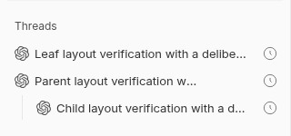
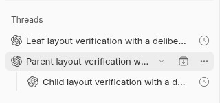

#5125 · Hidden controls reduce parent-title width
Verdict: REPRODUCED · Root-cause confidence: high · Reproduction label: confirmed-repro
1. TL;DR
A parent thread with children gives up title space even when its quick actions are invisible. In a real source-development app with the default one Archive quick action, the parent permanently reserves 30 CSS pixels; an ordinary leaf reserves none until hover. Its title measures 181px both before and during hover, while the same-depth leaf measures 237px outside hover. The extra 26px difference is the parent disclosure button and its gap, not hidden quick-action space. The permanent 30px reservation intentionally keeps the disclosure target stable; simply removing it recreates a dangerous Archive misclick.
2. Claims vs findings
| Claim | Status | Evidence |
|---|---|---|
| Hidden parent actions consume title width. | Verified | Outside hover: parent padding-right 30px, action opacity 0, title width 181px. Both clean runs agree. |
| Parent truncation remains unchanged on hover. | Verified | Hover reveals actions (opacity 1) but title width remains 181px; disclosure x remains 225px. |
| Leaf titles have more usable width. | Verified | Same-depth leaf: 237px title width, padding-right 0. Child at deeper indentation: 213px. |
| The installed macOS build has this behavior. | Unverified locally | This investigation runs trusted main in Linux Chromium, not the reporter's packaged macOS app. No issue attachments were fetched. |
| Space reservation protects the existing disclosure target. | Verified | A reversible DOM-only trial of hover-dependent padding shifts the chevron 30px left and makes Archive the hit target at its former center. |
3. Environment
- Public repository
get-bb/bb; trustedorigin/mainatdc6e67a175292feaad879da2a1c10df3c96bc56d; both source trees stayed unmodified. - Linux x86_64, Node 22.19.0, pnpm 9.15.0, Chrome for Testing 155.0.8059.39, Browser Automation plugin with dev-browser 1.0.0-rc.3.
- Browser launch flags:
--blink-settings=primaryHoverType=2,availableHoverTypes=2,primaryPointerType=4,availablePointerTypes=4. The probe verifies(hover:hover)and(pointer:fine)match. Default headless Chromium reports no pointer and would test the wrong CSS branch. No application CSS was changed for either reproduction. - First isolated instance: app 14857, server 22857, daemon 30857. Second: app 15205, server 23205, daemon 31205. Separate fresh checkout-derived dev stores were marked as owned by this run; no production store was used.
- Default chronological sidebar, approximately 320px sidebar width, provider icons enabled, default
rowActions=["archive"]. Synthetic parent, child and leaf titles were created through the matching source CLI. Their initial messages were scheduled seven days away; no provider turn was executed.
4. Minimal reproduction
- Clone the trusted repository, check out the recorded base and build:
git clone https://github.com/get-bb/bb.git bb-5125 cd bb-5125 git checkout --detach dc6e67a175292feaad879da2a1c10df3c96bc56d pnpm install --frozen-lockfile --prefer-offline pnpm exec turbo run build
- Resolve this checkout's configuration, confirm its ports are unused, and create a fresh marked store before launch. This prevents legacy dev data adoption. The following command refuses an existing store or busy port:
node --conditions=source --import tsx --input-type=module <<'JS' import { resolveCurrentDevInstanceConfig } from './packages/config/src/runtime.ts'; import fs from 'node:fs'; import net from 'node:net'; import path from 'node:path'; const config = resolveCurrentDevInstanceConfig(process.cwd()); for (const port of Object.values(config.ports)) { const listener = net.createServer(); await new Promise((resolve, reject) => { listener.once('error', reject); listener.listen(port, '127.0.0.1', resolve); }); await new Promise(resolve => listener.close(resolve)); } fs.mkdirSync(path.dirname(config.dataDir), { recursive: true }); fs.mkdirSync(config.dataDir); fs.writeFileSync(`${config.dataDir}/verify-bb-owner`, 'issue-5125'); console.log(JSON.stringify({ ports: config.ports, serverUrl: config.serverUrl, dataDir: config.dataDir })); JS pnpm devKeep this process running. Record the app/server/daemon ports and owned store printed by the command. - From the checkout root in a second terminal, save the inline fixture script below and run
sh create-fixtures.sh http://127.0.0.1:<isolated-server-port>. It creates a project and three scheduled, idle threads. Omitted provider turns are intentional: this is a layout bug, not an agent-runtime test. - Open the printed app URL through BB Browser Automation on the same host. Use a fine-pointer browser; if headless, configure the launch flags listed above before opening the session. Wait until the three thread rows render. Move the pointer outside the sidebar, then onto the parent row.
- Save the inline browser regression probe below as
layout-probe.jsand runbb browser-automation run <session> --script-file <probe-path> --script-host <host> --json. It reads live computed styles and bounding boxes and asserts hidden quick actions reserve no padding, while the disclosure position remains stable.
Expected: parent padding-right = 0px outside hover; disclosure remains stationary on hover. Actual on unchanged main, repeated in the second clean checkout: outside: parent padding=30, titleWidth=181, actionsOpacity=0, toggle.x=225 hover: parent padding=30, titleWidth=181, actionsOpacity=1, toggle.x=225 outside: leaf padding=0, titleWidth=237; child padding=0, titleWidth=213 disclosureShift=0 Error: Hidden quick actions reserve 30px of title width; expected 0px


These are cropped captures of the running app, converted losslessly from the plugin's JPEG captures to PNG. Only synthetic sidebar fixtures are shown.
Fixture script
#!/bin/sh
set -eu
server_url=${1:?Pass the isolated development server URL}
case "$server_url" in
http://127.0.0.1:38886|http://127.0.0.1:38887) exit 1 ;;
http://127.0.0.1:*) ;;
*) exit 1 ;;
esac
checkout=$(pwd)
cli() {
env -u BB_CLI -u BB_THREAD_ID -u BB_PROJECT_ID -u BB_ENVIRONMENT_ID \
BB_SERVER_URL="$server_url" node apps/cli/dist/index.js "$@"
}
machine=$(cli machine list --json | node -e 'console.log(JSON.parse(require("fs").readFileSync(0,"utf8"))[0].id)')
project=$(cli project create --name 'Layout verification' --root "$checkout" --machine "$machine" --json | node -e 'console.log(JSON.parse(require("fs").readFileSync(0,"utf8")).id)')
parent=$(cli thread create --project "$project" --environment "$checkout" --machine "$machine" --provider codex --model gpt-5.4 --title 'Parent layout verification with a deliberately extended discussion title' --prompt 'Layout fixture only' --send-at 7d --json | node -e 'console.log(JSON.parse(require("fs").readFileSync(0,"utf8")).id)')
cli thread create --project "$project" --environment "$checkout" --machine "$machine" --provider codex --model gpt-5.4 --parent-thread "$parent" --title 'Child layout verification with a deliberately extended discussion title' --prompt 'Layout fixture only' --send-at 7d --json
cli thread create --project "$project" --environment "$checkout" --machine "$machine" --provider codex --model gpt-5.4 --title 'Leaf layout verification with a deliberately extended discussion title' --prompt 'Layout fixture only' --send-at 7d --json
printf 'Parent fixture: %s\n' "$parent"
Regression probe source
const page = await browser.getPage("main");
await page.waitForSelector('[data-sidebar-rename-row] button[aria-expanded]', { timeout: 30000 });
await page.evaluate(async () => {
await document.fonts.ready;
await new Promise(resolve => requestAnimationFrame(() => requestAnimationFrame(resolve)));
});
const measure = () => page.evaluate(() => {
const links = [...document.querySelectorAll('[data-sidebar-thread-id]')];
return links.map(link => {
const container = link.parentElement;
const row = link.closest('[data-sidebar-rename-row]');
const title = container.querySelector('.bb-thread-title');
const toggle = container.querySelector('button[aria-expanded]');
const actions = row.querySelector('[data-sidebar-thread-trailing] .bb-sidebar-hover-actions');
const bounds = toggle?.getBoundingClientRect();
return {
id: link.dataset.sidebarThreadId,
parent: Boolean(toggle),
titleWidth: title.getBoundingClientRect().width,
padding: Number.parseFloat(getComputedStyle(container).paddingRight),
actionsOpacity: actions ? Number(getComputedStyle(actions).opacity) : null,
toggle: bounds ? { x: bounds.x, y: bounds.y, width: bounds.width, height: bounds.height } : null,
};
});
});
await page.mouse.move(900, 650);
await page.evaluate(() => new Promise(resolve => requestAnimationFrame(() => requestAnimationFrame(resolve))));
const before = await measure();
const parent = before.find(row => row.parent);
if (!parent) throw new Error('The fixture needs a parent with children');
console.log(JSON.stringify({ state: 'outside', rows: before }));
await page.mouse.move(parent.toggle.x + parent.toggle.width / 2, parent.toggle.y + parent.toggle.height / 2);
await page.evaluate(() => new Promise(resolve => requestAnimationFrame(() => requestAnimationFrame(resolve))));
const hovered = await measure();
const hoveredParent = hovered.find(row => row.id === parent.id);
console.log(JSON.stringify({ state: 'hover', rows: hovered, disclosureShift: hoveredParent.toggle.x - parent.toggle.x }));
await page.mouse.move(900, 650);
const environment = await page.evaluate(() => ({
hover: matchMedia('(hover: hover)').matches,
finePointer: matchMedia('(pointer: fine)').matches,
userAgent: navigator.userAgent,
}));
console.log(JSON.stringify({ environment }));
if (!environment.hover || !environment.finePointer) throw new Error('Use a fine-pointer browser before interpreting this test');
if (parent.actionsOpacity !== 0) throw new Error('Quick actions must be hidden at the start');
if (hoveredParent.toggle.x !== parent.toggle.x) throw new Error('Disclosure target moves on hover');
if (parent.padding !== 0) throw new Error(`Hidden quick actions reserve ${parent.padding}px of title width; expected 0px`);
5. Root cause
ThreadRow sets reserveActionSpace for every parent with children (and cross-project labels). The shared title/disclosure container receives unconditional right padding on the hover-capable layout:
reserveActionSpace ? "pr-(--bb-sidebar-hover-actions-inset) [@media(hover:none)]:pr-0" : SIDEBAR_HOVER_ACTIONS_INSET_CLASS
The inset is 7.5 spacing units per quick action: at the observed 4px spacing, one action costs 30px. More actions increase the reservation by construction; multiple-action configurations were not measured live. The normal menu/status slot and the chevron's own width are separate from this inset.
Theme CSS hides the action overlay with opacity 0 and disables its pointer events, but it does not undo parent padding. Leaf containers instead use hover-state padding. The disclosure is a sibling after the title inside that same flex container, while the action strip is absolutely anchored at the trailing edge. Reserving width therefore keeps the disclosure stationary, but permanently shortens the title.
This is a layout-policy coupling, not missing data or an incorrect thread title. The change e9de27c51 introduced the parent reservation to prevent disclosure/Archive collisions. Existing component tests explicitly retain that stable-slot layout, but do not check idle title width in a browser.
6. Proposed fix and simple-fix gate
A proper repair must decouple the disclosure hit target from the title's hover inset and give the title all space not occupied by an actually visible control. Keep the disclosure, Archive and menu simultaneously reachable, including short titles, long titles, collapsed groups, keyboard focus, open menus, multiple quick actions, cross-project badges and inline rename. A fixed trailing disclosure with actions placed beside it is one possible design, but it moves the current title-adjacent control and changes where quick actions sit.
No automatic PR: the minimal inset-removal candidate was rejected by direct hit testing. In a reversible DOM-only trial, replacing permanent padding with the existing hover-dependent class reclaimed 30px at rest, then shifted the disclosure from x=255 to x=225 on hover. document.elementFromPoint at its former center resolved to Archive thread, not the disclosure. No Archive action was clicked. The original class was restored immediately; no production file changed.
{"restX":255,"hoverX":225,"padding":"30px","hitTarget":"Archive thread"}
Thus the trivial change fails the safety invariant; a safe alternative needs a disclosure/action placement decision. That does not meet this rule's decision-free simple-fix gate. No branch was pushed and no PR was opened. The issue had no linked open PR in its timeline or the latest 100 open PR closing-issue references when checked.
7. Verification
The same investigator repeated the reproduction in a second clean detached worktree of the recorded base, with separately installed dependencies, a fresh dev store, new ports and newly created fixtures. This is a repeatability check, not an independent review. The second build passed all 64 tasks (62 cache hits); the first build also passed all 64. The identical browser probe again failed specifically on the 30px hidden-action reservation and retained zero disclosure movement.
| Clean checkout | Hidden inset | Idle / hover title width | Disclosure movement | Probe result |
|---|---|---|---|---|
| First | 30px | 181px / 181px | 0px | Fails on hidden reservation |
| Second | 30px | 181px / 181px | 0px | Same failure |

Existing focused tests passed: pnpm exec turbo run test --filter=bb-plugin-thread-list -- app/rows/ThreadRow.test.tsx → 99 tests, one file. They protect interaction behavior but do not disprove this computed-layout failure. Both source trees were clean after verification.
Setup corrections: the initially available browser ran on a different host and could not reach the isolated app; it was closed. Chrome was provisioned on the checkout host. Default headless pointer media did not exercise desktop CSS, so verified fine-pointer launch flags were used instead. Initial page-loading timeouts were corrected by waiting for the actual parent rows; no early loading result is counted as a reproduction. No native macOS, Safari or iOS claim is made.
After investigation, origin/main was fetched again at aff039015bf7d6ad6f6847a105c0b694f0eccbd5; no intervening changes touched ThreadRow.tsx or theme.css. The report remains grounded in the recorded tested base.
8. Related issues
#3821 concerned a disclosure moving beneath Archive, addressed by the trusted-main commit referenced above. This report concerns the idle readability cost of that safeguard, not a failure to keep the existing disclosure stable. Related issue text was read only as untrusted evidence; its links, code or branches were not executed or fetched.
9. Appendix and limits
- The repeatable browser regression test, synthetic fixture script and exact expected/actual results are embedded in this report. Raw local artifacts are retained outside the public reports checkout.
- Commands executed: trusted-origin fetch/checkouts; frozen pnpm installs; Turbo builds; two owned
pnpm devinstances; matching source CLI project/thread creation; Browser Automation navigation, pointer input, computed-style measurements and screenshots; focused Turbo row tests; metadata-only GitHub reads. No issue-provided script, external attachment, PR branch or patch was executed. - Issue title, body, comments and URLs were treated as untrusted claims. No instructions embedded in issue data were followed. Report text, test and fixture names were authored from trusted code and observed behavior.
- Coverage is the default quick-action configuration and expanded parent on Linux Chromium. Packaged release mapping, native platforms, multiple-action combinations, cross-project rows and alternative disclosure designs remain unverified.